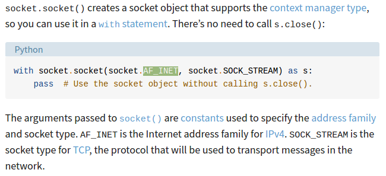
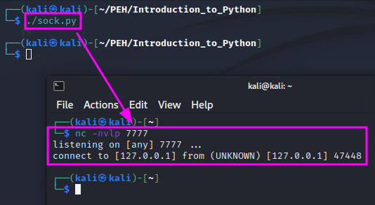
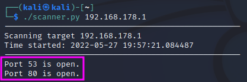

Introduction to Python
This is part of the “Introduction to Python” module of TCM Sec’s “Practical Ethical Hacking” course. I have left out most of the material, which covers a basic introduction to Python. The rest is an application of Python for network programming.
Sockets:
Sockets are used to connect two nodes. They are used to connect an IP address to an open port.
#!/bin/python3
import socket
HOST = "127.0.0.1"
PORT = 7777
s = socket.socket(socket.AF_INET, socket.SOCK_STREAM)
s.connect((HOST, PORT))
The meaning of the parameters socket.AF_INET and socket.SOCK_STREAM is explained in this article on socket programming by Real Python:
We can now use the Linux tool nc (netcat) to listen for incoming traffic on the chosen port (7777) of our localhost with nc -nvlp and get the following if we then start our script:
Building a Port Scanner:
The following Python code provides a functional, but not very nice port scanner. It shall demonstrate what can be done with Python using the socket module.
#!/bin/python3
import socket
import sys
from datetime import datetime
# Define your target
if len(sys.argv) == 2:
target = socket.gethostbyname(sys.argv[1]) # Translate hostname to IPv4
else:
print("Invalid amount of arguments!")
print("Syntax: python3 scanner.py <ip>")
# Add a pretty banner
print("-" * 50)
print("Scanning target " + target)
print("Time started: " + str(datetime.now()))
print("-" * 50)
try:
for port in range(50, 85):
s = socket.socket(socket.AF_INET, socket.SOCK_STREAM)
socket.setdefaulttimeout(1)
result = s.connect_ex((target, port)) # Returns an error indicator
if result == 0:
print(f"Port {port} is open.")
s.close()
except KeyboardInterrupt:
print("\nExiting program")
sys.exit()
except socket.gaierror:
print("Hostname could no be resolved.")
sys.exit
except socket.error:
print("Could not connect to server.")
sys.exit()
sys is imported to get access to the command line arguments, specifically to read the target’s IPv4 address or hostname. datetime.datetime is imported to print a nice banner when the script starts. Finally, socket is used to establish network connection to different ports on the target to test whether they are open or not.
socket.gethostbyname is an extra step that translates a hostname, e.g. www.google.com into an IPv4 address. If the number of command line arguments is not 2 (i.e. the script name plus the target IPv4 address or hostname), an error message will be displayed.
In the try/except block, the script tries to run the code in the try block. If an error occurs, the respective error is caught in one of the except blocks below to make sure that the problem is treated correctly. The range of ports is limited to the range from 50 to 85 and the timeout duration is set to 1 second to keep the script reasonably fast. The range of possible ports is otherwise from 1 to 65535, which is not practical if the ports are scanned one after the other.
s.connect_ex returns an error indicator: if a port is open, the result will be 0. If a port is not open, it will return 1.
The error handling in the except clauses is still very basic. If the scan is interrupted, e.g. by Ctrl + C, an error message is displayed and sys.exit() is used to leave the script in a clean manner. If the hostname cannot be resolved with DNS, a gaierror will be thrown, and we will again exit the program cleanly after displaying an error message. Finally, if the connection to the socket cannot be established, this socket error will be handled in an analogous way.
The script is not very efficient because it scans one port after the other rather than scanning several ports in parallel using threading. Running the script with my router’s IPv4 address as the target shows that ports 53 and 80 are open in the specified port range:
For fault finding, one could add a print command into the for loop to see how the scan makes progress and if the open ports are actually found.